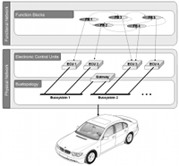

A Dual-View Visualization of In-Car Communication Processes

Authors. Michael Sedlmair, Wolfgang Hintermaier, Konrad Stocker, Thortsen Büring, Andreas Butz
Venue. IV (2008)
Abstract. With the increasing complexity of in-car communication architectures, their diagnostics have become essential for automotive development and maintenance. In order to help engineers to detect and analyze the potential sources and consequences of errors, it is crucial to provide both comprehensive and detailed insight into the communication processes and their contexts. Two important aspects of these are the dependencies and correlations between onboard functions. In this paper we present a dual-view visualization for exploring the functional dependency chains of in-car communication processes. One view presents the dependencies of hardware components using a space filling approach similar to a treemap, whereas the other view displays the functional correlations as an interactive sequence chart. The views are coupled via color coding and show the dependencies of an interactively selectable functional unit. In an expert evaluation, we assessed the benefits of using this visualization technique for in-car communication diagnostics with very positive results.